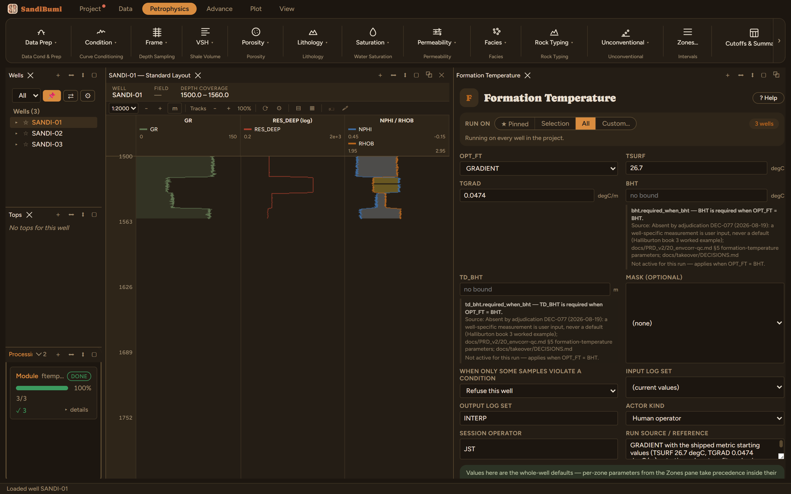

Formation Temperature writes FTEMP, the temperature of the rock at every
sample depth. Run it first, before anything that involves a fluid: resistivity
of mud filtrate and formation water, gas density, and every saturation model
downstream depend on temperature, and none of them will invent one. If a later
pane asks for FTEMP and cannot find it, this module is the answer.
The physics
Rock temperature increases with depth at a rate set by the basin's heat flow,
and over the depth window of a single well that trend is close to linear. The
module offers the two ways a study usually knows the trend:
GRADIENT: you state a surface temperature TSURF and a gradient
TGRAD, and FTEMP = TSURF + TGRAD × depth. Use this when the study has an
agreed regional gradient.
BHT: you state one measured bottom-hole temperature and the depth
it was read at, and the module draws the line from the surface temperature
through that anchor. Use this when the well delivered a BHT on its log
header, which is the more common situation, and remember that a header BHT
is usually a few degrees cool because the mud has not re-equilibrated.
The picks and why
OPT_FT selects the mode. Everything else is a number feeding the line:
TSURF 26.7 degC and TGRAD 0.0474 degC/m are the
shipped starting values, a practitioner starting point (0.026 degF/ft
restated per metre, DEC-085) that you refit per basin. They are the picks
for this walkthrough.
BHT and TD_BHT are used only in BHT mode: the measured
temperature and the depth it belongs to.
What changes when you change them: TSURF shifts the whole curve up or down
by the same amount at every depth; TGRAD tilts it, so the disagreement grows
with depth. On these wells (roughly 1495 to 1570 m) the arithmetic is easy
to check by hand: 26.7 + 0.0474 × 1495 = 97.6 degC at the top of the logged
interval and 26.7 + 0.0474 × 1570 = 101.1 degC at TD, and the run reproduces
exactly that.
Step by step
Open Petrophysics ▸ Data Prep ▸ Formation Temperature. The pane
docks beside the log view.
Leave OPT_FT on GRADIENT and the shipped TSURF and TGRAD in place, or
enter your basin's refit values.
Fill the custody line (operator and the source of your picks) and press
Run Formation Temperature.
GRADIENT mode: two numbers and a line. The BHT fields stay inert
until OPT_FT selects them.
Reading the result
The run reports 3 clean wells. FTEMP spans 97.563 to
101.120 degC across the 1185 samples of the three wells, exactly the
hand arithmetic above. Verify it yourself in the Database Inspector's read-only
SQL panel:
SELECT MIN(value), MAX(value) FROM computed_curves
WHERE curve_name = 'FTEMP' AND NOT isnan(value)

Three clean wells. FTEMP now exists for every module downstream
that asks for a temperature.
Sensitivity, run live on these wells: switching to BHT mode with
120 degC at 1570 m steepens the line from the same surface
temperature, and FTEMP becomes 115.5 to 120.0 degC over the same interval,
about 19 degC hotter at TD than the shipped gradient predicts. That is the
size of decision the mode carries: a BHT anchor is well-specific evidence and
beats a regional gradient where you trust the measurement.
QC and pitfalls
An unstabilized header BHT reads cool. If a Horner-corrected temperature
exists, anchor on that.
The shipped gradient is a starting value, not a basin fact. A wrong
gradient does not fail anything visibly: Rmf, gas density and Sw all shift
smoothly with it, which is why the pick deserves a citation in the custody
line.
Re-running with new picks overwrites FTEMP for the run's wells and the
change flows into every later module the next time those are re-run. Runs
are re-runnable rather than undoable.